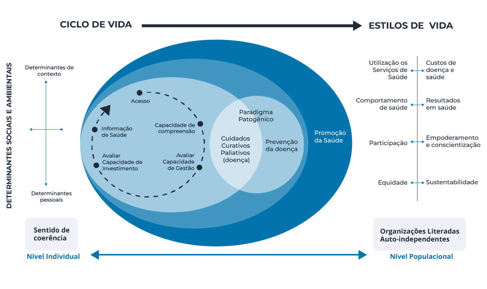

Módulo 1 | Aula 3 Literacia para a Saúde: concepção e perspectivas para promover saúde
A LS como alicerce para a promoção da saúde e do autocuidado em saúde
Para que a LS possa fundamentar as propostas de intervenção no cotidiano de trabalho dos profissionais da APS é necessário compreender qual a concepção de saúde tanto destes profissionais como dos usuários dos serviços ou da comunidade na qual a unidade de saúde está inserida. Uma das bases de sustentação do conceito da LS está centrada na Salutogênese.
Segundo Antonovsky, as vivências práticas, o acesso aos conhecimentos bem como as qualidades e os atributos positivos desenvolvidos ao longo da vida podem contribuir para que estes indivíduos respondam de forma diferenciada às demandas de saúde. Com isso, o modelo salutogênico estabelece um outro parâmetro para abordar a Promoção da Saúde.
Com a Salutogênese, o autor aponta a importância de captar os aspectos ou elementos que podem contribuir para gerar respostas positivas em saúde, mesmo em condições adversas para determinadas pessoas e como trabalhar com estas questões para melhorar as condições de saúde e de vida. (MARÇAL et al., 2018)
Confira o link para a Coordenadoria de Atenção à Saúde do Servidor (CASS) do Instituto Federal do Espírito Santo
Fundamentada nestas perspectivas elaboradas por Antonovsky, a Salutogênese traz um elemento importante para pensarmos o desenvolvimento de intervenções referenciadas pela LS. Trata-se do Senso de Coerência e os Recursos Generalizados de Resistência que você já viu na aula anterior. Vamos relembrar relembrar alguns conceitos importantes.
O senso de coerência (SCO) compreende a articulação entre a capacidade de cada pessoa em responder a conflitos ou questões que exigem tomada de decisões. O SCO destaca a capacidade de aproximar-se e compreender determinada situação ou informação; a capacidade de gerir, manejar tal situação e construir respostas e a capacidade de analisar criticamente a relevância ou significado daquela situação ou informação no seu cotidiano. (COUTINHO e HEIMER, 2014; KLEBA e WENDAUSE, 2009)
O SCO é considerado o fundamento para constituir uma proposta de assistência à saúde, tendo como referência o paradigma salutogênico. As respostas às diferentes situações, por cada indivíduo, podem ser decorrentes de suas experiências. O acúmulo dessas experiências contribui para o enfrentamento das demandas e situações apresentadas cotidianamente.
Os recursos generalizados de resistência, segundo Antonovsky, caracterizam-se por um conjunto de fatores e de variáveis vinculados a estudos epidemiológicos na sua articulação com a saúde. As características destes recursos estão correlacionadas aos aspectos genéticos, constitucionais e psicossociais da pessoa. Desta forma podem ser identificados os caminhos para evitar situações nas quais a pessoa possa colocar em risco sua saúde como recursos materiais, conhecimento/inteligência, identidade do eu, estratégias de coping (capacidade de racionalização e flexibilidade), suporte social, estabilidade cultural, religião.
Alicerçados nos conceitos de paradigma salutogênico formado pelo SCO e os Recursos Generalizados de Resistência, faz-se necessário estabelecer uma proposta para a operacionalização da Literacia para a Saúde com o intuito de fomentar estratégias para a promoção da saúde na APS.
Veja a seguir um modelo estruturante para a concepção e operacionalização da Literacia para a Saúde.

Pensar a LS no contexto da APS traz como pano de fundo a identificação dos determinantes e determinações sociais em saúde, identificados na figura anterior, como os determinantes sociais e ambientais.
A vida em sociedade, a caracterização da realidade social e cultural e a interlocução com diferentes instituições que promovem a socialização de informações e conhecimentos têm forte impacto na vida de cada indivíduo e na comunidade e contribuem para a formação dos determinantes pessoais e de contexto e, consequentemente, para as diferentes formas que estas pessoas vão responder aos fatores estressantes e situações adversas. Tais elementos vão compor o SCO das pessoas nas diferentes etapas dos ciclos e estilos de vida.
O encadeamento destas ações pode contribuir para outro aspecto enfatizado pela LS, o empoderamento (empowerment).
O empoderamento de cada pessoa, de determinado grupo ou comunidade, nesta situação, ocorre a partir do seu acesso às informações e conhecimentos em saúde, sua apropriação crítica e seu uso, a partir da realidade social na qual tais pessoas estão inseridas.
A apropriação das informações em saúde, sua gestão e o desenvolvimento de estratégias para investir na melhoria das condições de saúde fomentam as perspectivas da LS, especialmente na APS. Este movimento que impulsiona a LS pode ocorrer tanto no nível dos cuidados curativos e paliativos, como na prevenção das doenças e também no contexto da promoção da saúde.
Para tanto, faz-se necessário identificar e interpretar a relação dos níveis de cuidado e assistência em saúde e os indicadores que envolvem todo o processo de saúde-doença. Como você pôde observar na figura, os indicadores sobre a utilização dos serviços de saúde pela população e os custos de doença e saúde; o comportamento de saúde versus resultado em saúde; dados acerca da participação e do empoderamento, processo de conscientização, equidade e sustentabilidade, como elementos necessários para avaliar o processo saúde doença. O levantamento de dados acerca dos aspectos mencionados poderá fundamentar debates a respeito da contribuição das ações de promoção da saúde como estratégia para ampliar os níveis de LS e, consequentemente, reduzir os custos com assistência em saúde de média e alta complexidade.
Outro fator importante no contexto da LS é a identificação da correlação entre os comportamentos favoráveis à saúde e qualidade de vida versus os comportamentos de risco em saúde. Sobre o comportamentos de risco em saúde, apontam-se atitudes e escolhas que podem provocar danos ou problemas de saúde, tais como, uso de drogas, cigarro, consumo de bebidas alcoólicas, consumo de alimentos não saudáveis e inatividade física. (MOURA et al., 2018)
Importante reiterar que a compreensão da LS se refere a fatores como o empoderamento e a conscientização do indivíduo e/ou da comunidade. Dados acerca desses fatores ratificam a autonomia como fator crucial para a ampliação dos níveis de LS da população. Aliado a isto, ressalta-se a perspectiva de fomentar a conscientização como fundante para fortalecer a tomada de decisão das pessoas.
format_quoteQuanto mais conscientização, mais se 'desvela' a realidade, mais se penetra na essência fenomênica do objeto, frente ao qual nos encontramos para analisá-lo. Por esta mesma razão, a conscientização não consiste em 'estar frente à realidade' assumindo uma posição falsamente intelectual. A conscientização não pode existir fora das “práxis”, ou melhor, sem o ato “ação – reflexão”. Esta unidade dialética constitui, de maneira permanente, o modo de ser ou de transformar o mundo que caracteriza os homens. Por isso mesmo, a conscientização é um compromisso histórico. É também consciência histórica: é inserção crítica na história, implica que os homens assumam o papel de sujeitos que fazem e refazem o mundo. Exige que os homens criem sua existência com um material que a vida lhes oferece.
FREIRE, 1979
Considera-se ainda, os dados acerca da equidade em saúde e sustentabilidade. A ampliação dos níveis de LS perpassam pelas condições de equidade em saúde e o compromisso do Estado e da população com a sustentabilidade.
A partir da articulação destas dimensões e de sua análise crítica é possível desenvolver indicadores que possibilitam conhecer a realidade e identificar os níveis de LS do indivíduo, com o propósito de construir estratégias para a promoção da saúde no contexto do autocuidado e do autocuidado apoiado. (MENDES, 2012; SILVA, 2009).
Tendo como perspectiva mensurar o nível de LS de determinado grupo ou população, diversos pesquisadores elaboraram instrumentos para avaliar o grau de assimilação e apropriação sobre questões que circundam a temática da LS.
Tais instrumentos têm sido construídos com o objetivo de estabelecer parâmetros que possam identificar a capacidade das pessoas em acessar informações sobre saúde, compreender e fazer a gestão destas informações, com o intuito de investir em melhores condições de saúde e qualidade de vida.
Entre os instrumentos para mensurar os níveis de LS destaca-se:
- Estimativa Rápida de LS de Adultos em Medicina (Rapid Estimate of Adult Literacy in Medicine - REALM);
- Teste de LS Funcional em Saúde de Adultos (Test of Functional Health Literacy in Adults - TOFHLA);
- Escala de LS em Atividades de Saúde (Health Activities Literacy Scale - HALS);
- Teste de Leitura de Realização Médica (Medical Achievement Reading Test - MART);
- Avaliação de LS para diabetes (Literacy Assessment for Diabetes - LAD);
- Breve avaliação da LS para adultos de língua espanhola (Short Assessment of Health Literacy for Spanish speaking Adults - SAHLSA).
Ratifica-se que a concepção de Literacia para a Saúde, aqui apresentada, está fundamentada nos estudos, pesquisa e produções teóricas alinhados à Organização Mundial de Saúde, na qual a LS se caracteriza pela capacidade de acessar, compreender, avaliar e aplicar as informações sobre a saúde.
Nesta perspectiva, cabe destacar a escala HLS-EU (European Health Survey) e a escala HLS-EU-BR estruturada a partir da adaptação cultural para o português brasileiro. Este instrumento é composto de 47 questões fechadas, que permitem identificar o grau de LS geral, LS no âmbito do cuidado em saúde, LS no âmbito da prevenção em doenças e LS no âmbito da promoção da saúde dos participantes da pesquisa.
Confira o questionário com as 47 questões para avaliar o nível de LS.
A identificação dos níveis de Literacia para a Saúde, por meio de investigações utilizando escalas específicas para tal avaliação, pode colaborar para o aprimoramento das ações de promoção da saúde e do autocuidado em saúde. Isso porque a LS, conforme apontado anteriormente, envolve um processo contínuo de aprendizagem que capacita o indivíduo, sua família ou sua comunidade para desenvolver os seus potenciais e o seu conhecimento, de modo a poder participar mais ativamente da vida em sociedade e da tomada de decisões sobre suas condições de saúde. (SABOGA-NUNES, MARTINS, FARINELLI et al., 2019).